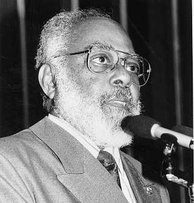

Personalidades afro-brasileiras

Luiza Mahin (séc. XIX)
Figura associada às rebeliões negras na Bahia, como a Revolta dos Malês. Representa a resistência de mulheres negras contra a escravidão.

Abdias Nascimento
Intelectual, artista e político. Fundador do Teatro Experimental do Negro e referência na luta antirracista e na defesa de políticas afirmativas.

Lélia Gonzalez
Filósofa e militante feminista negra. Propôs o conceito de “amefricanidade” e denunciou o racismo e o sexismo nas estruturas do Estado.